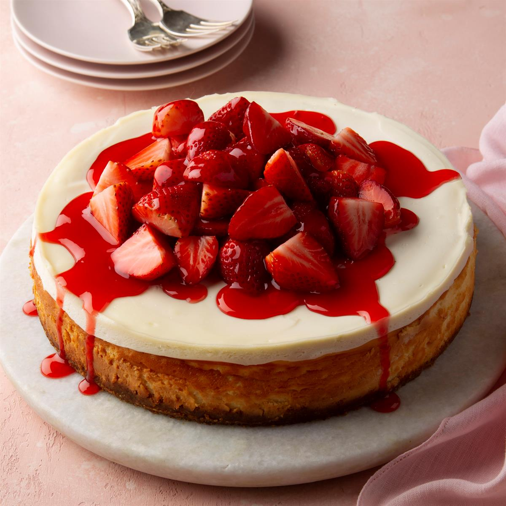

Easy Cheese Cake

description
An easy no-bake cheesecake using powdered whipped topping and flavored with cherry brandy. Decorate with chocolate syrup and fresh fruit slices, or just serve on its own.
Ingredients
- 1¼ cups graham cracker crumbs
- ¼ cup white sugar
- ½ cup butter, melted
- 2 (1.3 ounce) envelopes whipped topping mix
- 2 (8 ounce) packages cream cheese, softened
- 2 fluid ounces cherry brandy
Steps
- In a medium bowl, combine graham cracker crumbs, butter and sugar. Mix well and press into the bottom of a 9 inch springform pan.
- In a large bowl, mix the whipped topping powder as directed on package and beat until thick. Cut the cream cheese into small cubes and drop them into the whipped topping, one at a time, while beating. Pour in the cherry brandy and beat another 5 minutes at high speed.
- Spoon the filling into the graham cracker crust and smooth the top. Refrigerate 2 to 4 hours, or until set.